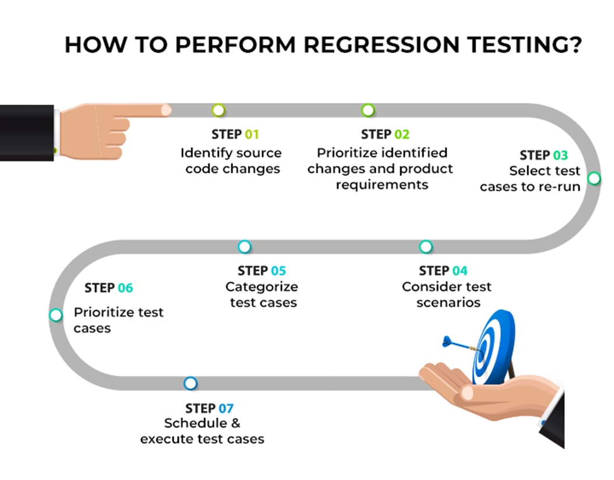

Blogs
The world of software development today is fast-paced and it is important to ensure that your applications remain stable and reliable. Whenever updates or improvements are released to fix errors or add new functions, there is always a risk of inadvertently introducing new problems. Then regression testing comes into play.
Regression testing is like the guardian angel of software quality assurance. It's all about making sure that any changes made to your software—whether they're tweaks to the code, adjustments in settings, or even integrating with other systems—don't break anything that was already working perfectly fine.
Why Does Regression Testing Matter?
Software isn’t easy; there are so many pieces involved and these have got to fit together without a hitch.Sometimes even small changes can create huge issues in another part of the system. Regression testing will capture such hidden bugs before they can cause havoc.
Spotting Sneaky Side Effects: A developer might tamper with their code unintentionally causing something that had been fine initially not working anymore.Regression testing helps detect these ill-intended results early enough so you can address them before they become major issues.
Keeping Users Happy: Users always hate it when their preferred apps suddenly become defective.Regression testing ensures that updates and modifications do not interfere with the user experience: this way, your clients will remain satisfied and faithful.
Protecting Your Code: As a software project grows, things beneath the surface can become messy. Regression testing is like a safety net that ensures code remains clean and reliable regardless of its growth rate.
But What Are the Challenges?
Of course, regression testing is not all rosy. Mostly if you work in fast-changing environments with limited resources.
Time and Effort:For large projects featuring many functionalities, running through all the test cases can be quite time-consuming. This then is regressive testing wiggling out time from my life as I have to go through multiple test cases.
Choosing What to Test:You have to be smart about which test cases to prioritize when there is limited time and resources. It has got to be finding that golden mean between painstakingness and quickness.
Keeping Up with Changes:Keeping test cases up-to-date as your software evolves can be challenging even though some parts are just mere bugs. There might be new features calling for new tests or old ones demanding modifications in order to keep pace.
How Can One Make Regression Testing Simpler?
Do not despair, there are many approaches to making regression testing less of a headache. Here are a few tips:
Automate, Automate, Automate: Automation of your test suites could be very helpful in saving time and energy as you can run tests more often and consistently in various environments.
Focus on What Matters: Be sharp about which test cases to consider first by focusing on those that would most probably fail and cause disappointment among users.
Integrate Testing into Your Workflow: : Include regression testing in your development process while integrating it with continuous integration and deployment pipelines.
Stay Organized: Keep track of code alterations and set up baseline test suites to benchmark against so that you will always know when anything goes wrong.
Conclusion:
Regression testing may not be the most exciting part of software development, yet it is vital for maintaining the stability and dependability of your applications. As such, regression testing ensures that your program will still function adequately even as its size increases or evolves thereby offering an improved user experience. So do not waste resources on conducting fewer tests—the end users will appreciate this decision!